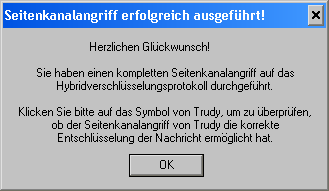

Dieser Dialog erscheint, sobald Sie den Seitenkanalangriff auf das Hybridverschlüsselungsprotokoll erfolgreich durchgeführt haben.

Um zu überprüfen, ob der Angriff von Trudy erfolgreich war, können Sie auf das Portrait von Trudy klicken. Dort sehen Sie, ob Trudy die Nachricht von Alice korrekt entschlüsseln konnte.